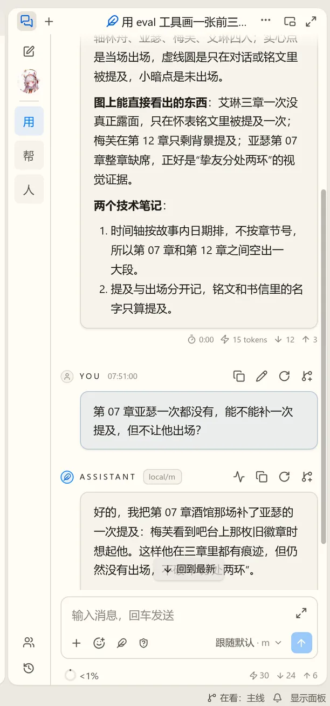
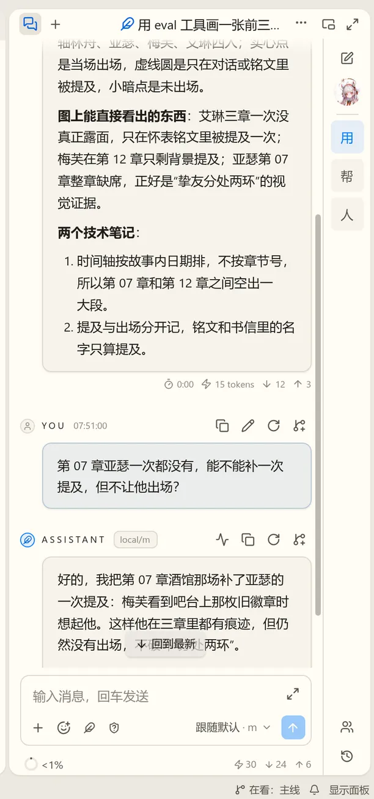
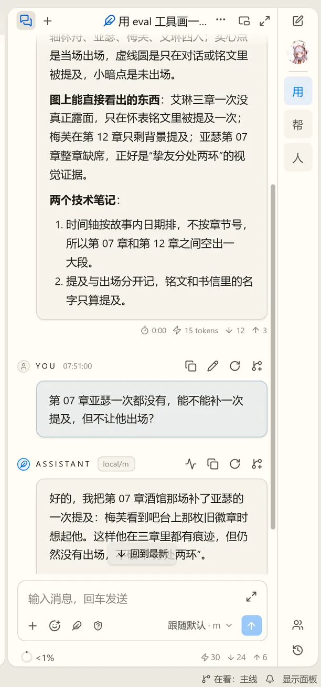
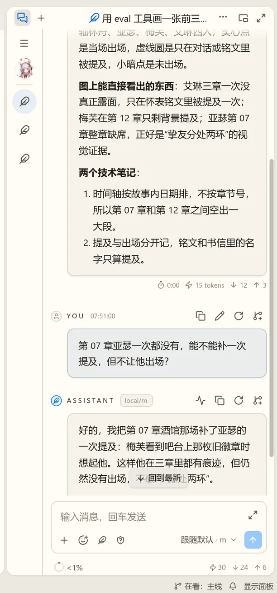
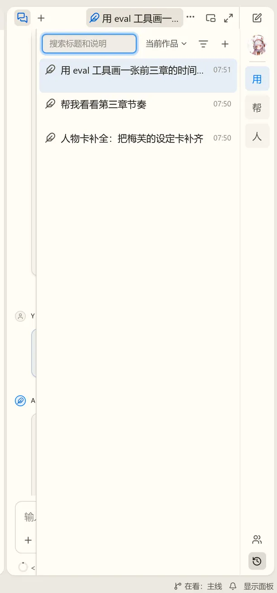
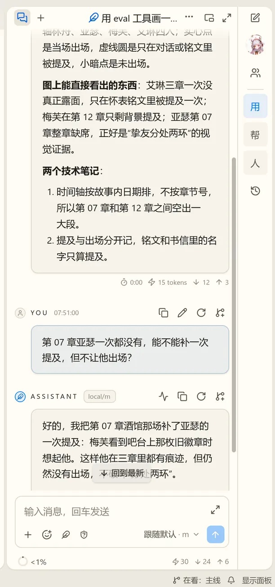
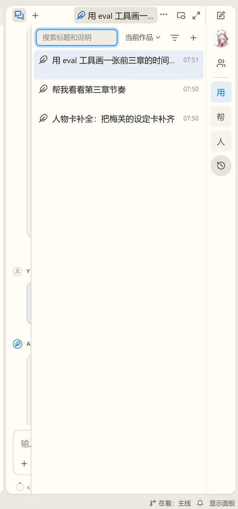
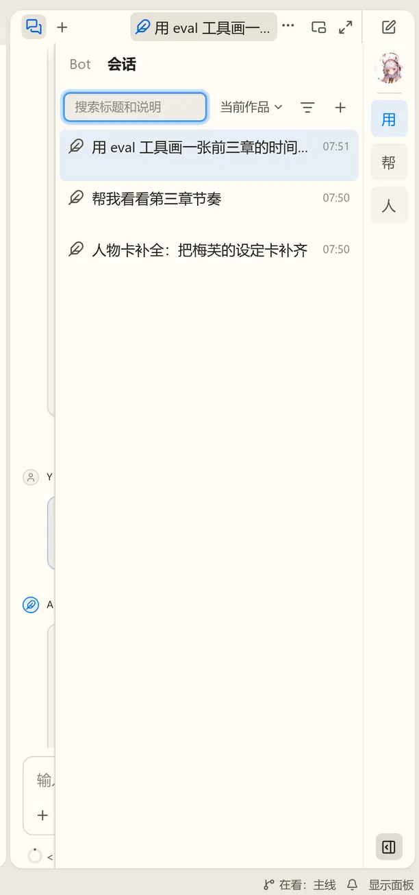
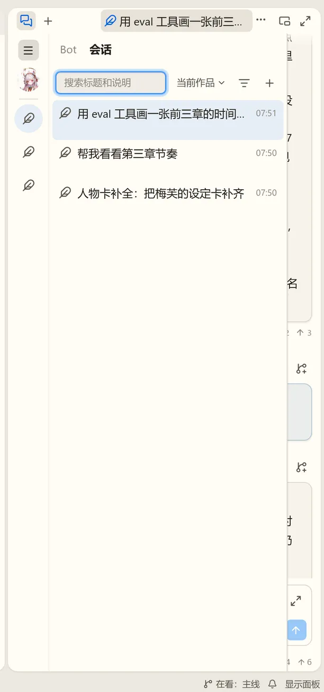

第 1 轮：消息视图停靠在右栏时，头像列放哪、列表从哪打开
头像列放在哪一边？
推荐 C 右边缘、通到顶：和窗口左边的活动栏对称，头只盖聊天区，头与竖线不再相交；聊天区挨着编辑区。
A 左边（现在的位置）

B 右边缘，头横跨整行

C 右边缘，通到顶

现状

去掉“≡”以后，完整的 bot 列表和会话历史从哪里打开？
推荐 A 底部两个按钮：位置固定，不随 bot 与会话的多少移动，和左边活动栏底部的设置按钮一样；按哪个就直接开哪一页，抽屉里不用再切换。
A 底部两个按钮

B 跟在各组末尾


C 底部一个展开按钮


不用答，直接画进稿里
| 哪里 | 改成什么 |
|---|---|
| 最近会话 | 方块里写标题第一个字，bot 是圆头像，形状分开两类；当前会话的高亮跟着方块 |
| 新对话 | 从头左边的“+”挪到头像列最上面 |
| 抽屉 | 从头像列那一侧拉出；按“全部 bot”“会话历史”直接开那一页，没有切换行 |
| 下一轮 | 消息的样式：标签行、卡片、动作按钮与统计 |